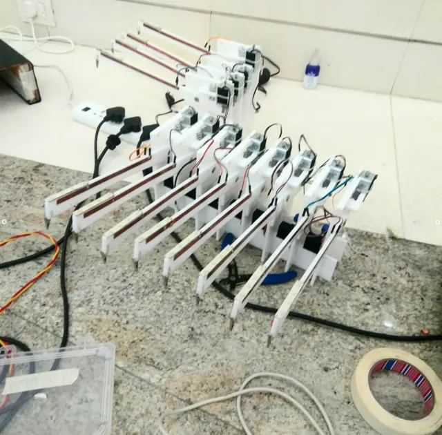
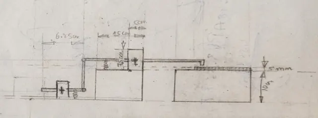
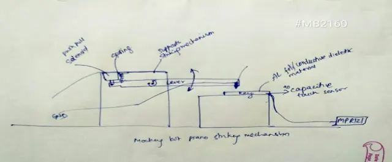
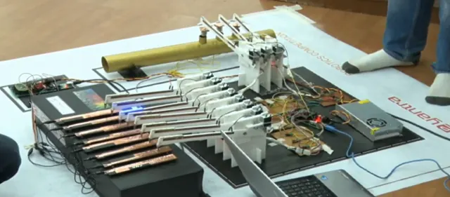
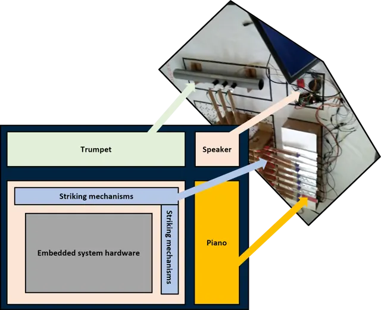
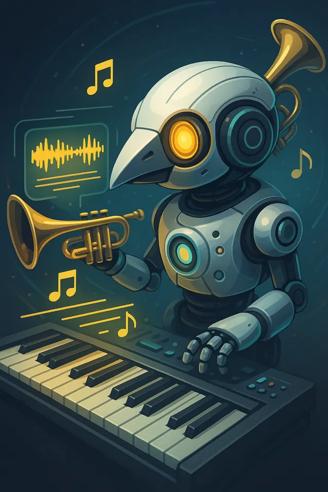

a robot that listens to music — then plays it back on real instruments
THE CHALLENGECould a robot understand music well enough to perform it? For IIT Bombay's E-Yantra finals, our team built a Mocking Bot that listened to audio, identified instruments, and played notes on real instruments.
ORIGIN STORYCuriosity has been my default setting since I was a teenager studying Leonardo da Vinci — not for his sketches, but for his method: find patterns across anatomy, mechanics, and imagination, then build what seems impossible.
Wanting the fastest response time, I studied how the human hand prepares before striking. Inspired by that, I designed a solenoid striker and tuned the system to about 400 ms response with 92.6% instrument detection accuracy, helping us place 4th out of 7,173 teams. I also added a visual indicator signaling the robot's next strike — because performance is not enough if a system is not legible to humans.
KEY METRICSDETAILED CASE STUDY — RESTRICTED
Full UXR notes, process artifacts & design documentation are access-gated while being polished.






During national finals at IIT Bombay, the robot performed live demos, accurately mimicking musicians — earning 4th place out of 7,173 teams.